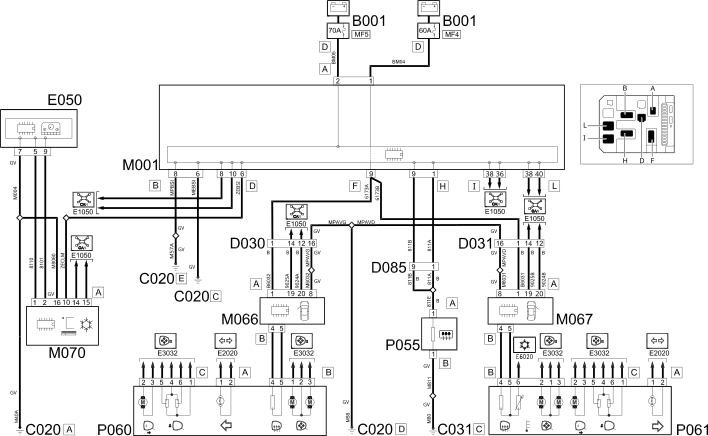

E3030 DEMISTING REARSCREEN AND REAR VIEW MIRRORS - WIRING DIAGRAM
- Path
- Electrical equipment > 1 ELECTRICAL FUNCTIONS > E30 ELECTRICALLY ACTIVATED DEVICES > E3030 HEATED REAR WINDSCREEN AND DOOR MIRROR DEFROSTING > E3030 DEMISTING REARSCREEN AND REAR VIEW MIRRORS - WIRING DIAGRAM
- Kind
- wiring diagram
- Applies to
- engines: 2.0 16V JTD, 2.2 16V JTD; all production periods; only with equipment: MY 2005
- Interactive page
- https://sloeber94.github.io/elrnDB-fUlss/en/#/179008904
Applies to: engines: 2.0 16V JTD, 2.2 16V JTD; all production periods; only with equipment: MY 2005

Components
Component code | Description | Reference to the assembly |
|---|---|---|
ENGINE COMPARTMENT JUNCTION UNIT | ||
PASSENGER SIDE DASHBOARD EARTH | - | |
RIGHT REAR EARTH | - | |
DRIVER'S FRONT DOOR COUPLING | - | |
PASSENGER FRONT DOOR COUPLING | - | |
REAR/TAILGATE COUPLING | - | |
INSTRUMENT PANEL | ||
BODY COMPUTER | ||
DRIVER'S DOOR CONTROL UNIT (NPG) | ||
PASSENGER DOOR CONTROL UNIT (NPP) | - | |
CLIMATE CONTROL SYSTEM CONTROL UNIT | - | |
HEATED REAR WINDSCREEN | ||
LEFT EXTERNAL REAR VIEW MIRROR | Op. 7005R FRONT DOOR MIRRORS | |
RIGHT EXTERNAL REAR VIEW MIRROR | Op. 7005R FRONT DOOR MIRRORS |
Topics linked from this page (17)
- 5505A MULTI-FUNCTION COMPONENTS
- 5560B ANALOGUE CONTROL PANEL
- 7035B REAR WINDOW
- B001 ENGINE COMPARTMENT JUNCTION UNIT
- C020 PASSENGER SIDE DASHBOARD EARTH
- C031 RIGHT REAR EARTH
- D030 DRIVER'S FRONT DOOR COUPLING
- D031 PASSENGER FRONT DOOR COUPLING
- D085 REAR/TAILGATE COUPLING
- E050 INSTRUMENT PANEL
- M001 BODY COMPUTER
- M066 DRIVER'S DOOR CONTROL UNIT (NPG)
- M067 PASSENGER DOOR CONTROL UNIT (NPP)
- M070 CLIMATE CONTROL SYSTEM CONTROL UNIT
- P055 HEATED REAR WINDSCREEN
- P060 LEFT EXTERNAL REAR VIEW MIRROR
- P061 RIGHT EXTERNAL REAR VIEW MIRROR